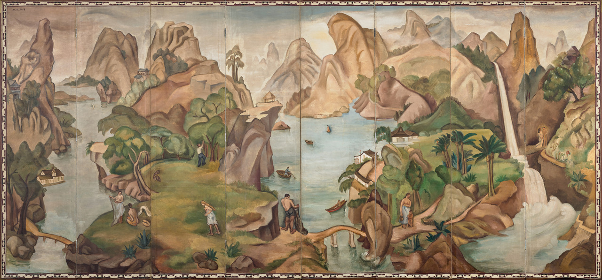
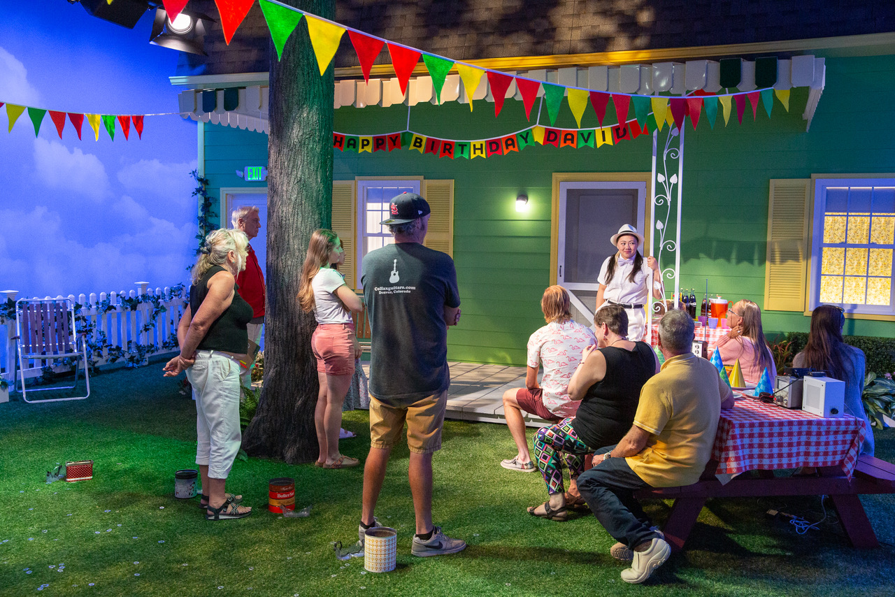
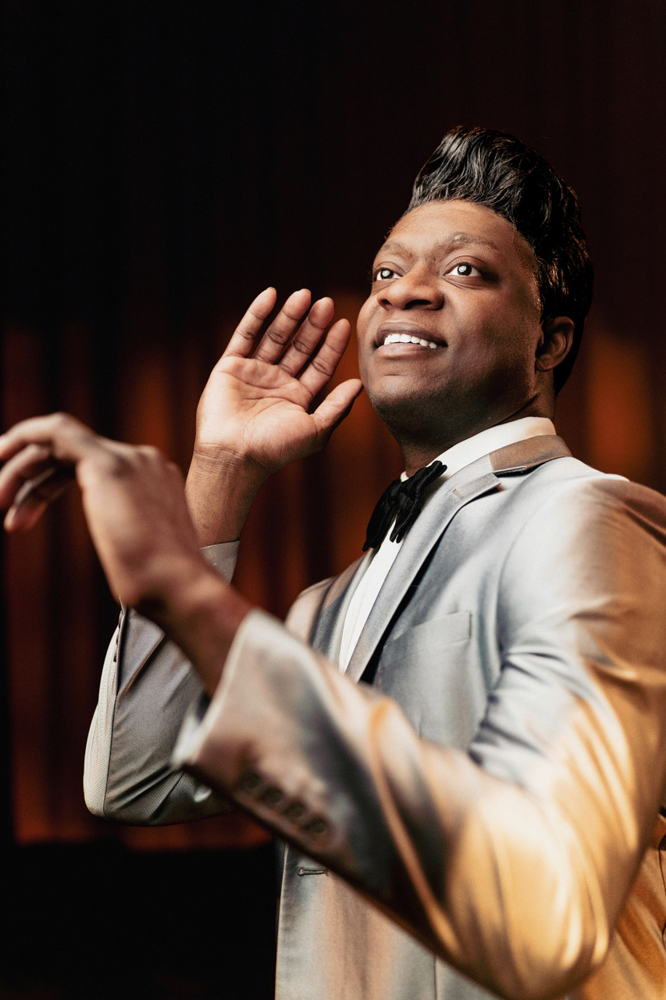
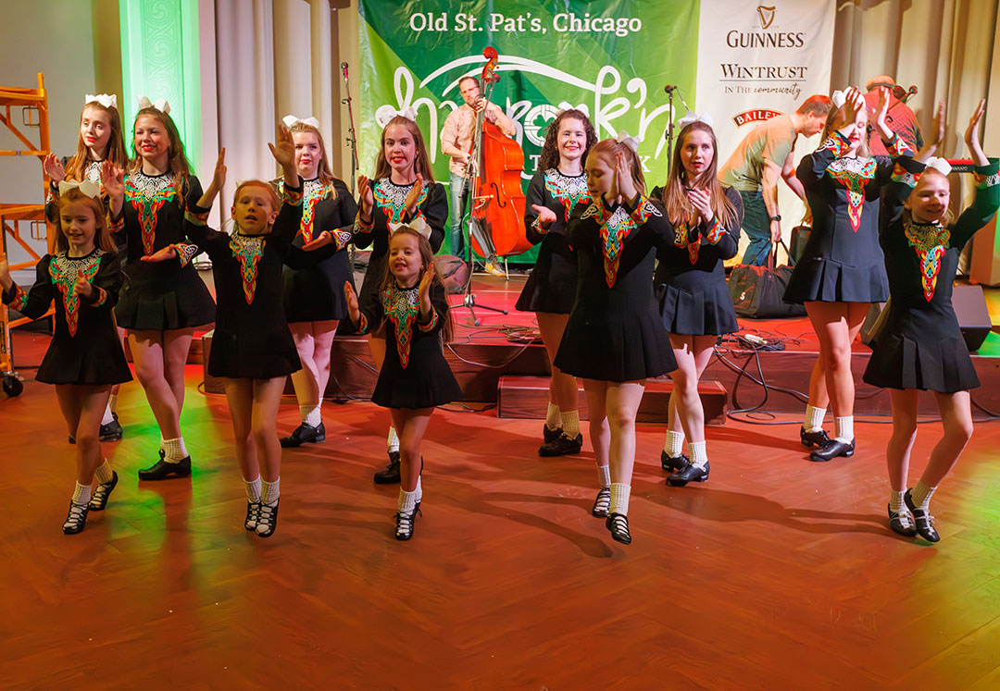
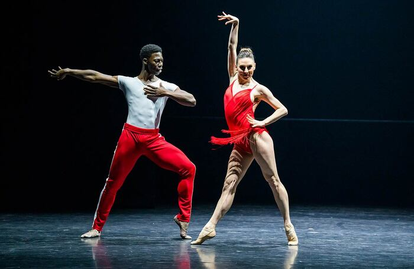

March begins with two must-see exhibitions, both opening on March 7 at the Art Institute of Chicago.
Curated by Yeonsoo Chee, Korea Foundation associate curator of Korean art at the Art Institute, “Korean National Treasures: 2,000 Years of Art” runs through July 5. The Korean government has officially designated 22 of the 140 artworks in the exhibition as either National Treasures or Treasures. I know Yeonsoo Chee. Among her recent accomplishments is the creation of a gallery devoted to Korean art, both ancient and modern, and the National Treasures exhibition is a coup for both her and the Art Institute.
For the first time since its acquisition in 1948, the Art Institute is showing Henri Matisse’s book Jazz, published in 1947 when the artist experimented with paper cut-outs for the first time. The ticketed exhibition, “Matisse Jazz: Rhythms in Color,” which runs through June 1, also includes fifty drawings, paintings, prints, and sculptures selected from across his career.

Co-created by Academy®, Grammy® and Tony Award®-winning artist David Byrne and writer Mala Gaonkar, and presented by the Goodman Theatre, “Theater of the Mind” is described as an ‘immersive theater installation’ that runs March 11–May 31 in the Reid Murdoch Building at 333 North LaSalle. Many remember the building, and probably not fondly, as it housed the City of Chicago’s Traffic Courts for many years. The Goodman presents an all-Chicago cast in the revival of August Wilson’s only Chicago-set play, “Ma Rainey’s Black Bottom,” March 28–April 26.

Uptown’s Black Ensemble Theater opens its 50th season with the return of one of its biggest national hits, “The Jackie Wilson Story,” March 7–April 26. As part of its 25th anniversary season, The Gift Theatre Company presents “TEN 25th,” its annual festival of 10-minute performances of new work written, directed, and performed by local artists, at A Red Orchid Theater, March 25–April 24.
Celebrating the best in non-equity Chicago theater, the awards ceremony for the 52nd annual Joseph Jefferson (Jeff) Awards for Non-Equity Theater will be held at the Harris Theater on March 23.
Described as ‘a play with music,’ Kurt Weill’s “Der Silbersee (The Silver Lake),” which premiered in Germany in 1933 before it was banned, will get its Chicago premiere with Chicago Opera Theatre’s production at The Studebaker Theater, March 4, 6, and 8. Haymarket Opera Company presents Johann Adolf Hasse’s “La Semele” at DePaul University’s Gannon Concert Hall on March 27. The opera premiered three hundred years ago.
Porchlight Music Theatre’s production of Frank McCourt’s musical “The Irish… and How They Got That Way” continues through March 15 at the Ruth Page Center for the Arts — just in time for St. Patrick’s Day, which is March 17.

It’s Irish American Heritage Month with fleadhs (celebrations of Irish and Celtic culture, dancing, and music) across the city and suburbs. The main events are the dyeing of the Chicago River and the Chicago St. Patrick’s Day Parade on March 14. That same day, head to the Shamrock’n the Block at Old St. Pat’s at 625 West Adams. The Northwest Side Irish Parade and South Side Irish Parade are both on March 15. The St. Patrick’s Day festivities continue with the Bank of America Shamrock Shuffle on March 22. Riverdance, with its blend of traditional Irish and international dance, makes a stop at The Paramount Theatre, March 27–29, during its international 30th anniversary tour of “Riverdance 30 — The Next Generation.” One of the founders of Riverdance, Michael Flatley, grew up in Chicago.
Chicago Human Rhythm Project presents “Stomping Grounds,” a festival that showcases traditional and contemporary work of Chicago-based percussive and dance companies. The first performance is at the Reva and David Logan Center on March 22 and features American, African, South Asian, and East Asian music. Also on March 22, the Ravi Shankar Ensemble brings their debut tour honoring Indian sitar player Ravi Shankar to Symphony Center.
Chicago Sinfonietta (CS) celebrates Women’s History Month with “Still I Rise,” a concert at Wentz Concert Hall in Naperville on March 6 and the Harris Theater on March 7. Two pieces in the program, Florence Price’s “Dances in the Canebrakes” and a world premiere and CS commission of Shirley J. Thompson’s “Seventh Sense: Incidents in the Life of Queen Amanirenas,” feature a collaboration with Deeply Rooted Dance Theater.

The Auditorium continues its “Celebrating Women Leaders in Dance” series with a performance of “Turn It Out with Tiler Peck & Friends” March 7–8. Red Clay Dance Company presents the 5th edition of its biennial La Femme Dance Festival March 26–28, culminating in a performance at the Harris Theater on March 28.
Celebrate the birthday (March 22, 1899) of ballerina and choreographer Ruth Page by attending “Center Stage at Ruth Page,” a two-day festival featuring performances by Chicago-based dance companies and Ruth Page resident organizations, at the Ruth Page Center for the Arts, March 20–21.
March 4 is Chicago’s 189th birthday. March 4 is also when Preservation Chicago announces its annual list of architecturally significant buildings and public assets in Chicago under threat of demolition. Register for the free hybrid program (in-person at the Chicago Architecture Center or online) announcing Chicago’s 7 Most Endangered Buildings in 2026.
The Mies van der Rohe Society celebrates the architect’s 140th birthday (March 27, 1886) by presenting a screening of the documentary “Mies and Me” (2026) on March 26 at S.R. Crown Hall, the Chicago landmark and National Historic Landmark that Mies designed in 1956.
March 26 also marks an event at another National Historic Landmark in Chicago, Wrigley Field, site of the Chicago Cubs home opener on March 26. The Chicago White Sox home opener is April 2.
I don’t have a green thumb, especially with orchids, but I enjoy them. The Chicago Botanic Garden’s “The Orchid Show: Feelin’ Groovy” continues through March 22, with the Illinois Orchid Society Spring show and sale on March 14 and 15, and a Post-Orchid Show Plant Sale on March 26.
Dates, times, locations, and availability are subject to change.